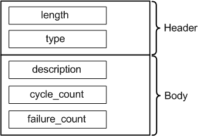

ErrorOverviewAttrType
Contains overview information on the errors that occurred during running a test pattern, in particular during the execution of a scan test.
The data type is DRLErrorOverviewAttr.

Field Name |
Data Type |
Description |
Comments |
|---|---|---|---|
length |
int |
Attribute length |
These fields form the attribute header. |
type |
short |
Attribute type |
|
description |
string |
Descriptive text, can be empty |
|
cycle_count |
long long |
Number of cycles executed in this pattern |
|
failure_count |
long long |
Number of errors in this pattern. This is, however, not necessarily the number of recorded errors. |
|
Functional changes
- Introduced in SmarTest 6.5.0